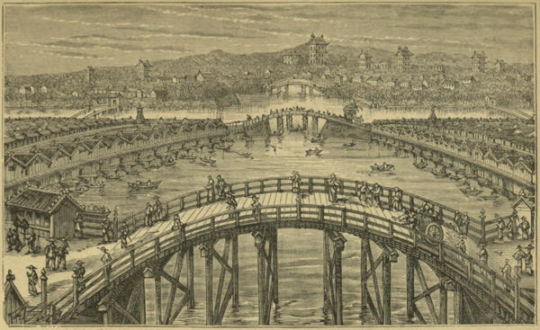

“Tokio”
Rambles Through Japan Without a Guide (1892)
Leaving our horses at the foot of the hill [Atago-yama], we ascended it by a long flight of stone steps, which were laid from the base to the summit. When we arrived at the top of the steps, we found ourselves in front of the temple and its surrounding arbours. Here we were waited upon by blooming damsels, and invited to partake of sundry cups of hot tea. But the temple, the arbours, and even our fair waiting-maids, were for the time disregarded as we gazed upon the vast and beautiful city which lay below us spread out like a vast panorama. Until now I had formed no adequate idea of the size of the capital of Japan. Before leaving China I had heard stories of its great size, and of its population of two millions; but I confess I had great doubts as to the truth of these reports, and thought it not improbable that, both as to size and population, the accounts of Yedo might be much exaggerated. But now I looked upon the city with my own eyes, and they confirmed all that I had been previously told.
Looking back to the south-west over the wooded suburb of Sinagawa from which we had just come, and gradually and slowly carrying our eyes to the south and on to the east, we saw the fair city of Yedo extending for many miles along the shores of the bay, in the form of a crescent or half-moon. It was a beautiful autumnal afternoon, and very pretty this queen of cities looked as she lay basking in the sun. The waters of the bay were smooth as glass, and were studded here and there with the white sails of fishing-boats and other native craft; a few island batteries formed a breastwork for the protection of the town; and far away in the distance some hills were dimly seen on the opposite shores. Turning from the east towards the north, we looked over an immense valley covered with houses, temples, and gardens, and extending far away almost to the horizon. A wide river, spanned by four or five wooden bridges, ran through this part of the town and emptied itself into the bay.
On the opposite side of a valley, some two miles wide and densely covered with houses, we saw the palace of the Tycoon and the “official quarter” of the city, encircled with massive stone walls and deep moats. Outside of this there are miles of wide straight streets and long substantial barn-looking buildings, which are the town residences of the feudal princes and their numerous retainers.
To the westward our view ranged over a vast extent of city, having in the background a chain of wooded hills, whose sloping sides were covered with houses, temples, and trees. A large and populous portion of Yedo lies beyond these hills, but that was now hidden from our view.
Such is the appearance which Yedo presents when viewed from the summit of Atango-yama. This hill now bears the modern title of “Grande Vue,” and well it deserves the name.
Yedo and Peking (1863)
The Ginza [in 1875] differs materially from the old To-ri. The stores are built in European style and filled with foreign articles, as well as with everything that a Japanese can want. All over the city, indeed, foreign vegetables and fruits of all kinds may be found. Butchers and bakers are numerous, and bread and meat are no longer scarce, as they were a few years ago. Milk is sold at tolerably reasonable rates, and ice can be procured in any quantity on the Ginza.
Coaches and jin-ri-ki-shas roll along the streets. Many of the men wear foreign clothes. No two-sworded men are seen any longer, and the Mikado goes about among the people, not fearing to show his face. And one of the most remarkable things to be noticed is the utter absence of tramps and beggars. Beggary was once a system, but now it has been abolished, and the beggars have been put to work. Many have been sent to Yeso, and others are employed in the factories.
The Sunrise Kingdom (1879)
When we reached the street we found ourselves in a wilderness of jin-ricshas, carts and carriers, and soon realized that we were in an older, larger, greater and dirtier city than the young and clean-looking Yokohama that we had left only a little while before.
As we wanted to see all that was to be seen, we thought it better to walk than to ride, and started for the Ginza, the main thoroughfare of Tokio. It is a wide street, with shops on either side and tram-way cars running through the centre. We walked for a long while, but found the shops less interesting than those of Yokohama. In Tokio the chief business is with Japanese, and the articles dealt in are, for the greater part, such as enter into their daily wants. There are in certain quarters many large establishments devoted entirely to the wholesale trade, and these have a busy, prosperous look. Tourists, who usually confine their purchases to objects of ornament, can find better shops for what they want at Yokohama and, I am told, at Kobé, Kioto and Nagasaki.
After tramping along the hot and dusty Ginza for an hour or more, we began to weary of the interminable rows of two-story buildings and the tedious repetition of shops for cigarettes and smoker’s articles, for American and European drinks, for hats, dried fish, paper, tea, crockery, baskets, and what not, but our interest in the crowds of foot-passengers and jin-ricsha riders was unabated. The cross streets seemed to be just as densely-built, and with the end nowhere in sight from the Ginza; although, with one or two exceptions, they were less crowded.
Tokio is said to contain a population of about 1,000,000, and has over 3,000 temples. As few of the houses are more than two stories high, it is easy to understand why it covers so large a space, for its area is about the same as that of London. It seems to be an aggregation of villages which have grown out towards one another until the interspaces have all been filled up, making, as a grand total, the present capital of Japan. These various villages, in most instances, furnish the names of the districts into which the city is divided. In this vast place, there are, all told, about 150 Americans and Europeans.
Jottings of Travel in China and Japan (1888)
The prevalent atmosphere [in Asakusa] is much more that of a fair than that of a place of worship. The sacred precincts resound with the cries of showmen, the cracks of shooting saloon musketry, the strains of street minstrels, and the patter of thousands of wooden clogs. Here is a man surrounded by a group of children, whom he is amusing by blowing isinglass into all sorts of shapes,—flowers, trees, jin-riki-shas, Daimiyôs, fair ladies, foreigners, boats, etc. Another stands in front of a peep-show, which outside is a mass of colour,—pictures of foxes with nine tails, badgers with enormous paunches, grinning devils, tyrannical husbands taking vengeance on their wives, famous actors, and female beauties of the most exaggerated Japanese type, and inside reveals gorgeous interiors of Daimiyôs’ palaces, famous natural scenes, etc. As he draws the wire to change the pictures, the showman entertains the onlookers with breathless nasal songs. We pass a wax-work, into which an old hag bids us enter with shrill unmusical voice. A stall laden with sugared peas and beans, and other delicacies in which the young take delight, has the additional attraction of a lottery, so that the child who by pulling a string brings out the face of a lucky god, gets more for his sen than the one who draws an ugly imp. Performing monkeys try to catch the eye: and here is a tremendous din of fifes and drums on a stage in front of a show; masked figures are cutting capers outside, and inside is to be seen a living head without a body. But it is startling to see a ghastly painting of the crucifixion suspended outside. What can have suggested this, and what connection has it with the inside performance? In one of the booths is an artistic prodigy. This is a little boy of about twelve, who, in full view of the public takes a large sheet of white paper, and, using Chinese ink and an ordinary writing-brush, produces in a wonderfully short time a picture, very sketchy, of course, but remarkably clever, of pots and flowers, or trees on river banks, or seas studded with junks and bordered by distant hills, or other objects of nature or art. Some powdered and flashily dressed girls try, with coaxing tones and sweet smiles, to lure us to their booth, where practice is to be had in archery. I am afraid, fair maidens, that you can hardly be so happy as you look. But it is hard to say, so merry are this people by nature. How many photographers, I wonder, have we passed? ... Jugglers, story-tellers, sorcerers, blind musicians, singing girls of the once outcast yeta class, and scores of other performers, are keeping up an incessant din. Above it all, the great temple slumbers, looking like an immense hive with restless swarms of bees. The haloed Buddhas sit serenely in the endless repose of Nirvâna, regardless of the crowd which surges beneath them. And the sacred pigeons coo beneath the eaves, or with conceited gait pace the temple courts, knowing well that none of all the crowd will do them harm.
The Land of the Morning (1882)
It is a little singular that to me Tokio constantly suggests a comparison with modern Rome. The differences are great, but so are the similitudes. The same brown skins, and variegated costumes of country folk; the same love of sunshine and half-nudity; the narrow streets; the careless poverty that sleeps by the wayside at midday; the shorn and shaven priests; the crowded temples; the heights and intervening valleys—all these bring to mind the ancient capital of the world. Then, too, Rome is here suggested by the same desire of the inhabitants for new buildings, and by the intermingling of town and country within the city limits.
Rambles Through Japan Without a Guide (1892)
Tokyo was a great surprise to us; the long narrow streets without foot-paths—the small picturesque shops of one or two storeys, their line broken in many cases by gardens or temples, or the palaces of some old feudal lord (daimyo)—the utter contrast in every detail to the life and appearance of a European city, made our rides and drives a continual interest.
Japan As We Saw It (Bickersteth) (1893)
Tokio is a town of the greatest extent but devoid of grandeur. It lacks the coherence of a big town. It still forms the accumulation of more than a hundred villages, which in olden times grouped around the stronghold of the Shogun and finally became united. The town is to-day still interspersed with numerous parks and country houses, with meadows and fields; and a few steps through a by-street lead from a crowded, busy thoroughfare into quiet streets of rural retirement, with houses surrounded by hedges and fences. Thus Tokio has in many parts of the town more the appearance of a suburb than of a metropolis.
Japan As I Saw It (1912)
◀ EarthquakesHakodate ▶